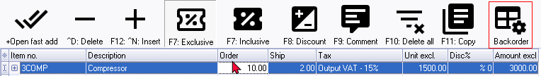
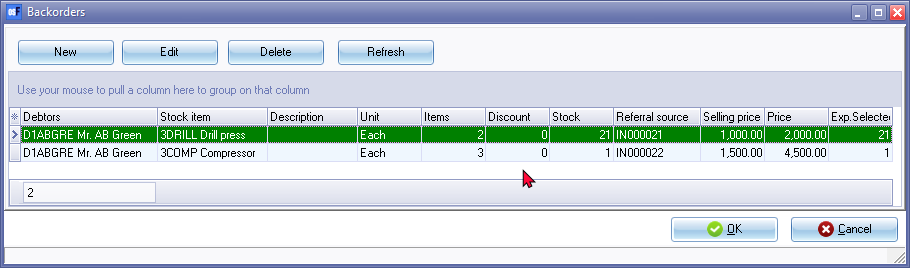
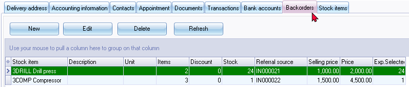
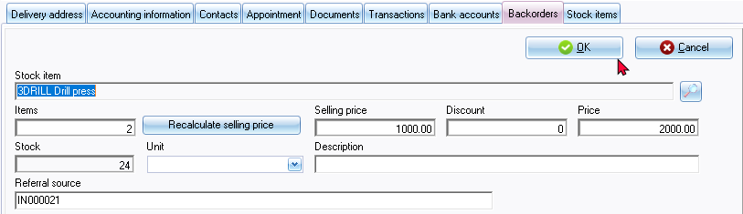
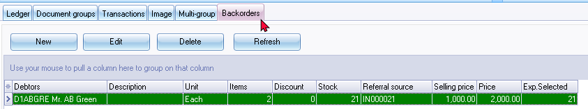
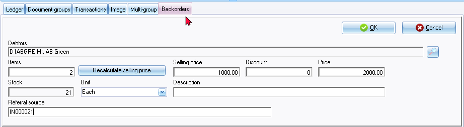

Backorders
What is backorders?
Backorders refer to customer orders that cannot be fulfilled immediately due to a lack of available inventory or stock. When a customer places an order for a product or service that is currently out of stock or unavailable, the business may choose to accept the order and create a backorder. This allows the customer to secure their place in line and receive the product or service once it becomes available again.
Here are some key points about backorders:
- Customer order fulfilment: Backorders are used as a mechanism to manage customer orders when the requested products or services are temporarily unavailable.
- Reservation of Stock: When a backorder is created, the business reserves the requested quantity of items for the customer. This ensures that the stock is set aside for that specific order, and the customer will receive it once it becomes available again.
- Communication with customers: It is crucial for businesses to communicate with customers regarding their backorders. Customers should be informed about the estimated availability date, any potential delays, and alternative options if applicable.
- Inventory management: Backorders provide valuable insights into demand for products or services. They help businesses track and anticipate customer needs, allowing for better inventory management and planning.
- Order prioritization: Backorders are typically fulfilled on a first-come, first-served basis. However, businesses may have internal policies or priority systems to determine the order in which backorders are fulfilled, especially if there are limited quantities available.
- Impact on financials: Backorders may have implications for revenue recognition and financial reporting. Depending on the accounting principles or standards applied, revenue from backordered items may be recognized at the time of shipment or when the customer is invoiced.
By managing backorders effectively, businesses can maintain customer satisfaction, optimize inventory management, and meet customer demands even when immediate fulfilment is not possible.
Backorders when processing invoices and quotes
If there are insufficient quantities of an item in stock to fulfil an order, the system will automatically calculate the shortage quantity (e.g., 10 - 2 = 8, as per this example) and add it to the backorder feature.

|
|
When processing invoices and quotes in osFinancials, you have the option to click on the Backorder icon. This allows you to edit backorders associated with the transaction being processed. |

When processing a new invoice for a debtor (customer/client) account that has outstanding backorders, the "Backorders" screen will be automatically displayed. In this screen, you can review and manage the backordered items associated with the customer.

If you select an item by ticking the "Selected" field, the system will update the transferred document line accordingly. The selected item will be removed from the backorder records and reports, indicating that it has been successfully transferred to the document line for invoicing or quoting purposes.
This functionality allows for efficient management of backorders during the invoice and quote processing workflow in osFinancials. By selecting and transferring items from the backorder records to the relevant document lines, you can ensure accurate and up-to-date tracking of inventory and timely fulfilment of customer orders.
Option to manage backorders
In osFinancials, the management of backorders is facilitated through various options and screens. Here is a breakdown of how backorders can be added, edited, and accessed from the Default ribbon within osFinancials:
- Edit → Backorders menu - You can edit, or delete backorders associated with specific stock items and debtor (customer/client) accounts. When adding new backorders, you may select the stock items and debtor (customer/client) accounts.
- Stock items (Backorders tab) - This tab allows you to manage backorders for individual stock items. You can edit, or delete backorders associated with specific stock items and debtor (customer/client) accounts. When adding new backorders, you may select the debtor (customer/client) accounts.
- Debtors (Backorders tab - This tab enables you to manage and track backorders for specific debtor accounts. You can edit, or delete backorders associated with specific stock items and debtor (customer/client) accounts. When adding new backorders, you may select the stock items.
These functionalities within osFinancials provide tools for managing backorders, allowing you to track, modify, and remove backordered items as needed. The backorder records and reports assist in monitoring outstanding orders and ensuring proper fulfilment when stock becomes available.
Backorder reports
Backorder reports may be printed on the Reports → Stock→ Backorder menu on the Reports ribbon. This Backorder report provides a detailed overview of the items on backorder, their associated customer accounts, quantities, pricing information, and any applicable discounts. It allows businesses to track and manage their backordered items effectively, aiding in inventory management and order fulfilment.
By utilising the Backorder report in osFinancials, businesses can stay informed about the status of backordered items, make informed decisions, and take necessary actions to fulfil customer orders promptly.
Edit → Backorders menu (Default ribbon)
This Backorders option on the Edit menu enables you to manage manage and track backorders for specific debtor accounts. You can edit, or delete backorders associated with specific stock items and debtor (customer/client) accounts. When adding new backorders, you may select the stock items and debtor (customer/client) accounts.

Debtors - Backorders tab (Default ribbon)
This tab enables you to manage manage and track backorders for specific debtor accounts. You can edit, or delete backorders associated with specific stock items and debtor (customer/client) accounts. When adding new backorders, you may select the stock items.
You can add, edit, and delete backorders, as well as adjust quantities, prices, and discounts as necessary. This helps ensure accurate tracking and fulfilment of customer orders.

|
|
Sorting and Rearranging Columns:
|

Adding, Editing, and Deleting Backorders:
- Within the Debtors - Backorders tab, you have the ability to add new backorders, edit existing backorders, or delete backorders as needed.
- Clicking the New button allows you to add a new backorder item, while the Edit button enables you to modify a selected backorder.

|
|
If the Backorders screen is launched from Input → Documents → Backorders, both the Debtor as well as the Stock item will be displayed. You may select them, if necessary. |
Click on the New button to add a new backorder item or on the Edit button to edit a selected backorder. The fields are as follows:
- Stock item – For existing backorders, the stock item code and description will be displayed. For new backorders, you can select the stock item.
- Items – The quantity field is automatically populated as the difference between the quantity entered in the "Order" field and the quantity entered in the "Ship" field of documents. For new backorders, you can enter the quantity.
- Recalculate selling price – Clicking this button will clear the discount percentage and recalculate the selling price to the original selling price (Price).
- Selling price and Price – These fields represent the price per item. The Selling price reflects the amount after the discount percentage, while the Price excludes any discount.
|
|
The Selling price and Price displayed is the prices for a single item. |

- Discount – The discount will be displayed if a percentage is entered in the "Customer discount" field on the Accounting information tab of the debtor account and the "Apply invoice discount" field is selected on the Stock Items (Default ribbon).
- Stock – This field displays the quantity of stock items on hand. This is the quantity of the "Exp. Selected" column on the Backorders tab - List view) displays the quantity of stock items on hand. The quantities in this field are updated when documents are posted to the ledger (e.g., credit notes, purchases, and supplier returns) or when stock item adjustments are made.
- Unit - The Unit description of the stock item.
- Description - To be advised.
- Referral Source – The Referral Source field will automatically be updated with the invoice number if the quantity entered in the "Order" field exceeds the quantity entered in the "Ship" field.
Stock items - Backorders tab (Default ribbon)
This tab allows you to manage backorders for individual stock items. You can edit, or delete backorders associated with specific stock items and debtor (customer/client) accounts. When adding new backorders, you may select the debtor (customer/client) accounts.

Adding, Editing, and Deleting Backorders:
